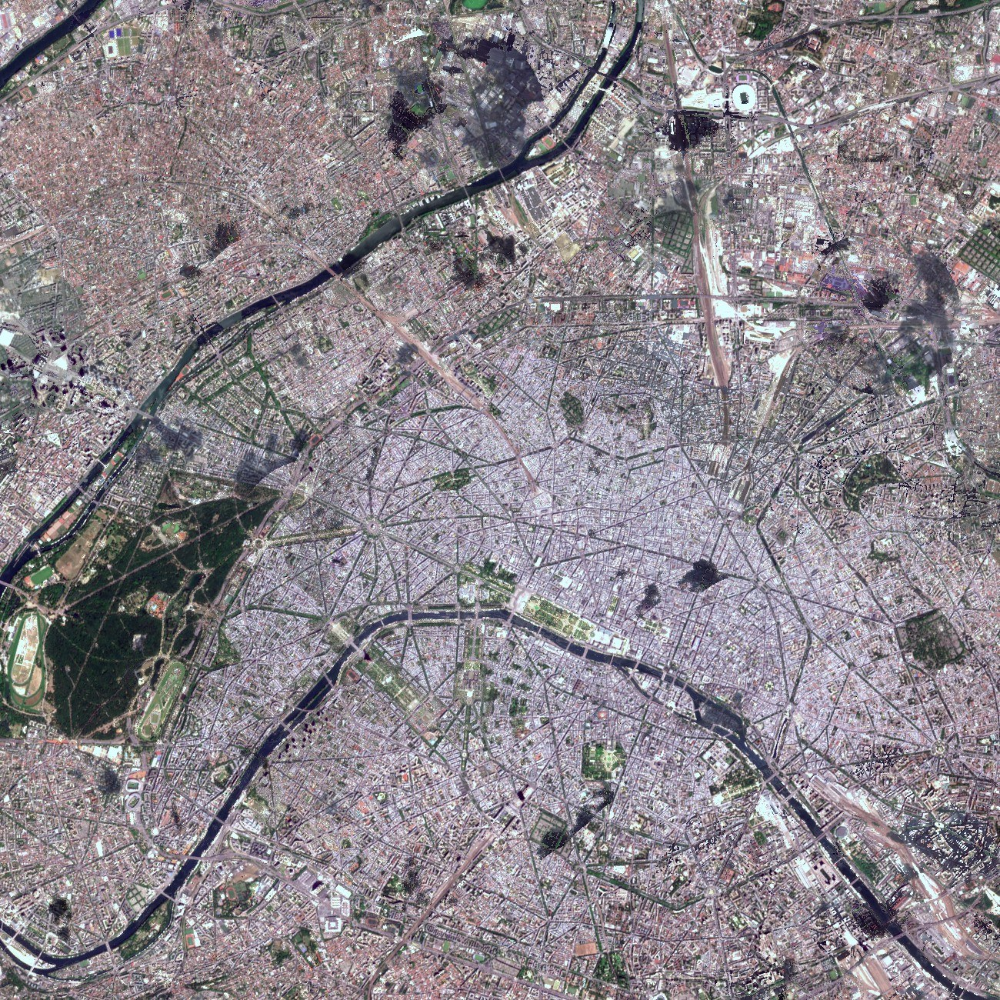
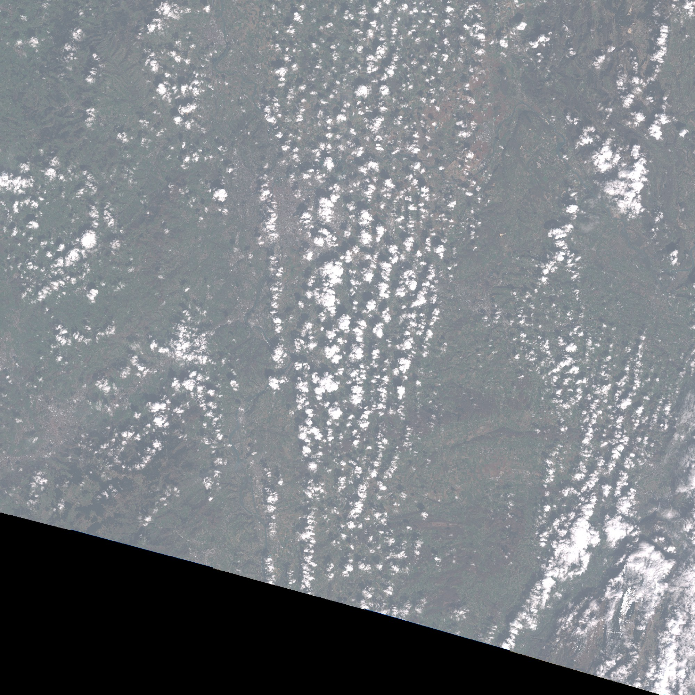
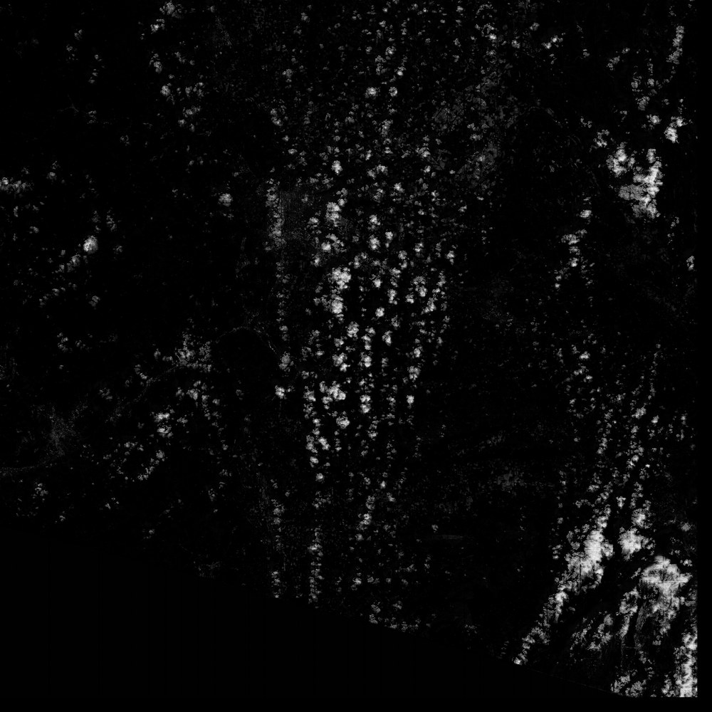
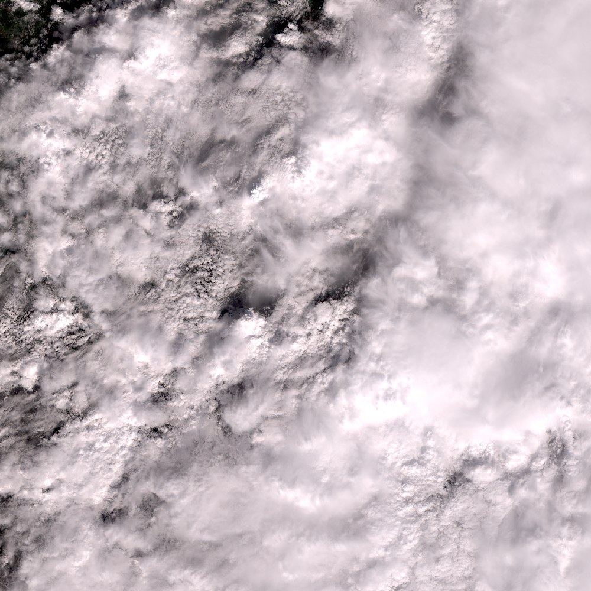
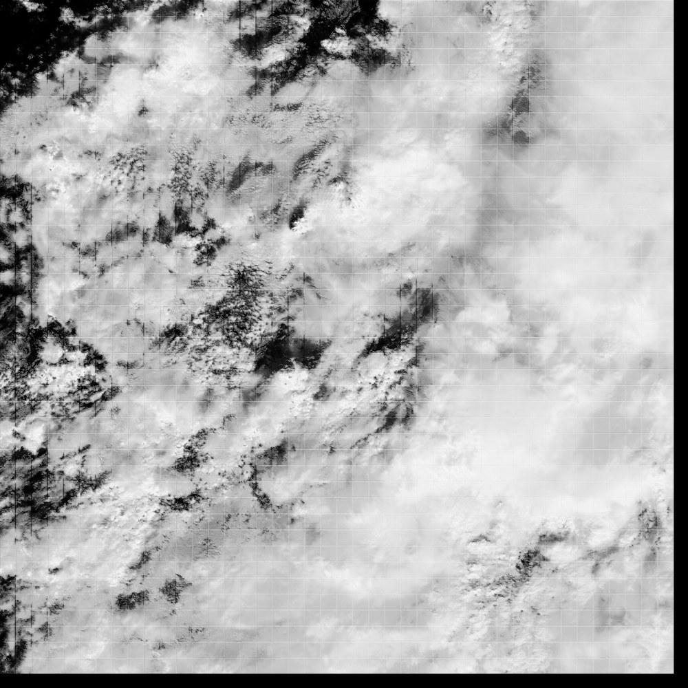
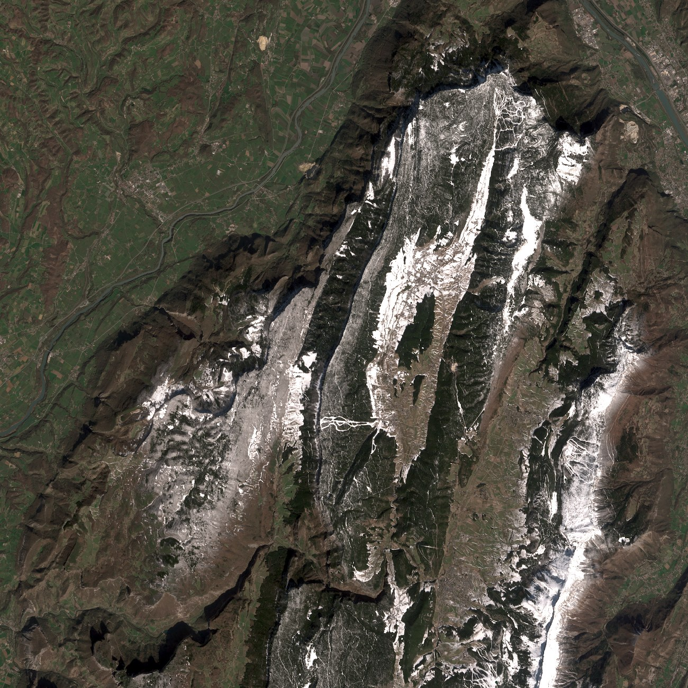
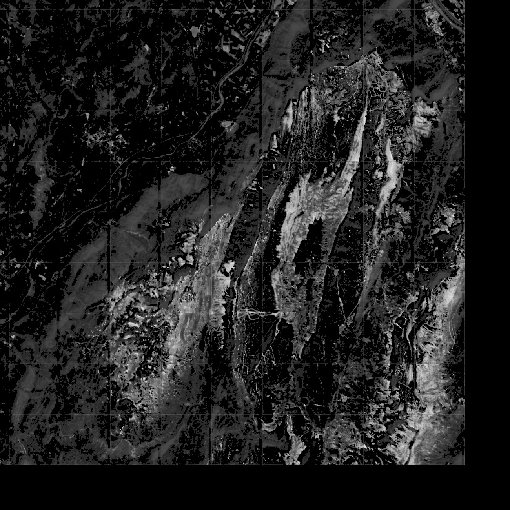
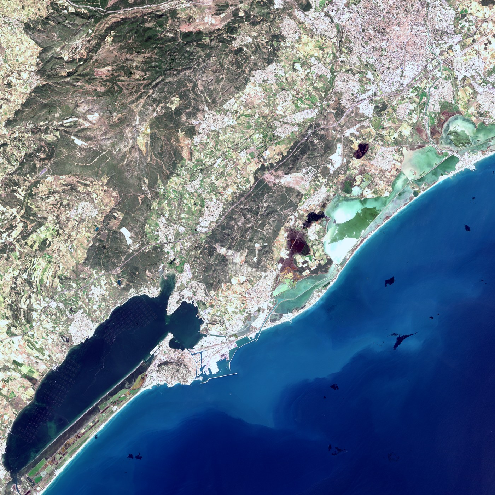

Two thirds of the planet is under cloud at any moment, so most of what an optical satellite sends back
is weather rather than ground. Every image below is built the same way: a U-Net decides pixel by pixel
whether it is looking at cloud, and a compositor keeps, for each pixel, the single cleanest observation
of the month. Nothing is generated, inferred or painted in — every pixel was photographed.
The three tiles below are the three places I have lived. That is not only sentiment: I know what each of
them is supposed to look like, which is the only way I can tell a good result from a plausible one.
Between them they break the pipeline in three different directions — detail, snow, colour.
95.9%of a tile recovered
12monthly mosaics, 2025
4 / 15dates actually downloaded
3tiles, three stress tests
2 argsto point it anywhere
Tristan Giandoriggio · drag the sliders, play the year
01
Paris — where the detail has to survive
I live here, which makes this the tile I cannot lie to myself about. I know what these roofs, parks and
bends of the river look like at 10 m, so anything the compositor smears, softens or invents is
obvious to me before any metric says so.
Drag Tile 31UDQ, June 2025. The pass on the left is not a bad
one by local standards — 4% of it is usable ground. The composite on the right is 95.9% ground, and
every pixel in it was actually photographed: nothing here is generated, inferred or painted in.
The real test is underneath. A composite is stitched from several dates, so the risk is not that it
still looks cloudy — it is that it goes soft, or that the joins between dates start showing as
edges through the city.

Fig. 1 Central Paris, 13 km across, shown at 1:1 —
one screen pixel is one 10 m Sentinel-2 pixel, no downscaling. The star at the Arc de Triomphe,
the Bois de Boulogne and Longchamp, the Champ de Mars, every bridge over the Seine. Several dates meet
inside this crop, and I cannot find the seams.
And because this tile has twelve months behind it, the grading can be checked against itself: run the
year, and only the season should move.
Play Tile 31UDQ, 2025, 28 km across. The
percentage is real observed ground for that month — January and November are weather, not a
failure of the method: no clear pixel was ever offered.
02
Isère — fields, and then mountains
I lived here, and I chose the tile for what sits in it: the Rhône corridor's fields, which are the
easy half, and the Alps immediately behind them, which are the case I knew the model would not get for
free. In visible light, fresh snow and a cumulus tower are the same object — bright, neutral, and
lying on top of everything else.
Drag Tile 31TFL, March 2026, 14 passes. The day on the left is
30.2% usable — broken cumulus over the corridor, and the haze that comes with them. On the right,
94.6% of the scene taken from a pixel the model called clear, plus 1.3% rescued from its least
contaminated look: the Rhône and the Saône meeting at Lyon, the Alps still under snow.
Two arguments changed to get here — the tile code and the date range. No threshold was touched, no
model retrained, no reference image chosen for the region. What changes is the weather it is handed, and
that is legible in the masks: one pixel, one probability, white for cloud.

12 March The pass — broken cumulus in rows.

12 March Its mask — 30.2% of the scene survives as usable ground.

22 March The pass — a front sitting on the whole tile.

22 March Its mask — 0.2% usable. The date is downloaded, predicted, and contributes nothing.
White is cloud probability near 1. The faint 256 px grid on 22 March is the tiling the model runs
in, showing through where the whole scene is cloud and there is no contrast to anchor it.
And the half I came for: 17 March, the clearest day of the month at 90.0% usable, with no weather
over the mountains at all — so whatever the mask finds up there is not cloud.

17 March The Alpine corner of the tile, 26 km across, cloud-free.

17 March The same corner as cloud probability, gamma raised
to 3 so a low response shows at all. It is drawing the snow: mean probability 0.13 over the
snowfields against 0.006 over the fields below, almost all of it under the threshold. The Alps stay
in the mosaic.
03
Montpellier — nothing to remove, everything to calibrate
I lived here too, and the sun is the point: the model finds almost no cloud to remove, so what is left on
screen is the colour. Open sea, the Étang de Thau, limestone and old tile roofs, irrigated fields
and the Cévennes behind — nearly the whole range the grading has to hold, in one frame.
Drag Tile 31TEJ, the same 110 km of ground twice, nine
months apart. Both sides are cloud-free composites, so the season is the only thing that should
separate them; what separates them first is the calibration — orbit seams and a magenta cast on
the left, one continuous scene on the right, sea, salt and garrigue all sitting where they should.

Fig. 2 The Étang de Thau, Sète and the lidos, with
Montpellier top right, 34 km across. The shellfish tables rule the lagoon into squares, the
Palavas ponds come out turquoise against the Mediterranean, and the coastline is exact.
04
How it works, in four lines
Rank before downloading. Every candidate date is scored while still on the server, and only
the four cleanest of a month are pulled.
Segment. A four-channel U-Net — red, green, blue, near-infrared — gives every
pixel a cloud probability.
Veto. The model's call is backed by the cirrus band, a minimum blob size, a dilation for soft
edges, and a shadow test.
Composite. Among the clean looks at a pixel, the least atmospherically contaminated one
wins; each new date is colour-matched to the mosaic already in place.
Figures on this page are downscaled. Full-resolution outputs are 10 980 px square and
200–280 MB each.